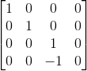
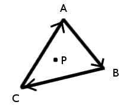

3D Rasterizer
Created by Michael Burns
This is a simple rasterizer that demonstrates the application of linear algebra to 3D computer graphics. The program was written in Javascript and uses HTML5/Canvas for rendering.
First off, here's a brief step-by-step summary of what the program does:
- At the start of the program we define some vertices for an array of triangles in 3D space. These form the shapes of our 3D objects. Then we initiate the rendering loop.
- To render the image (which happens ~60 times per second), we first create 4x4 transformation matrices for each of the 3D objects -- these are used to move, rotate, or scale the objects around. For example, if we want to rotate a cube and shift it away from the origin, we create an identity matrix and then multiply it by rotation and translation matrices -- the result is the cube's transformation matrix.
- Next, for every object in the scene, we iterate through all of its triangles and multiply each of the triangle's three vertices by the object's transformation matrix. Then we multiply those results by a perspective matrix; the three resulting vectors contain the coordinates of the triangle projected onto our screen.
- Now that we've projected the 3D triangles onto a flat plane, we need to rasterize them. (i.e. depict them as pixels on the screen.) To draw a triangle, we calculate the left, right, top, and bottom values of its bounding box, then iterate through every pixel within that box. Next, for each pixel, we use an edge function to test if the pixel lies inside the triangle. (Side note: Juan Pineda developed this method of triangle rasterization in 1988. I've wrote a bit about the math involved below.)
- We also keep track of the Z-value of each pixel and only draw over an existing pixel if the new pixel is closer to the screen. (This is called Z-buffering.)
Some interesting notes
We're using using homogeneous coordinates in this program for a few reasons: First, it's impossible to translate a vector in 3-space by multiplying it with a 3x3 matrix. (Essentially only scaling, rotation, and shearing are possible.) To perform translations, we need to multiply a 4D vector by a 4x4 matrix. To convert our 3D coordinates to 4D, we simply introduce a new coordinate (typically called w) to each vertex, and we set it to 1. For example, let's say we want to move the point (0, 2, 3) to the right by 4 units. We can accomplish this with the following matrix multiplication:

Homogeneous coordinates are also more or less necessary for perspective projections. This is the basic idea: we need to shrink increasingly distant objects so that they appear to be farther away. This is easily accomplished by setting the w coordinate to -z and subsequently dividing the x, y, and z coordinates by w. (Why do we want w = -z instead of positive z? Because in our orientation, (0, 0, -1) is the forward direction vector of the camera, which means all visible objects will have negative z values.) This simple matrix will do the job:

However, we also need to normalize the z-coordinate (using "near" and "far" planes) and have control over the camera's field of view, so our program's perspective matrix ends up looking something like this:

f is the distance to the "far" clipping plane of the camera, n is the distance to the "near" plane, and fov is the angle of the camera's field of view.
Note that the division of the (x, y, z) coordinates by w doesn't happen during the perspective matrix multiplication. This is done separately later on. Without the division by w, the illusion of depth won't occur.
Lastly, the triangle rasterization algorithm we're using pretty cool. In 1988, Juan Pineda developed a technique that allows you to easily check if a point lies to the relative "left" or "right" of a line. He called this an "edge function".
So, suppose we have a triangle with points A, B, and C wound clockwise:
If P lies on or to the "right" side of each of the vectors AB, BC, and CA, then P lies inside the triangle. Now, here's what Pineda's edge function looks like for the edge AB:
EAB(P) = (P.x - A.x)*(B.y - A.y) - (P.y - A.y)*(B.x - A.x)
If EAB ≥ 0, then P lies on or to the right of the vector AB. We simply need to compute EAB, EBC, and ECA to find if P lies within the triangle. If it does, then we know we should draw a pixel at point P.References, Resources & Research
- Scratchapixel: Rasterization: a Practical Implementation
- Scratchapixel: The Perspective and Orthographic Projection Matrix
- Tom Dalling: Explaining Homogeneous Coordinates & Projections
- David Rousset: Learning How to Write a 3D Software Engine in C#, TS, or JS -- Rasterization & Z-Buffering
- The ryg blog: Triangle Rasterization In Practice